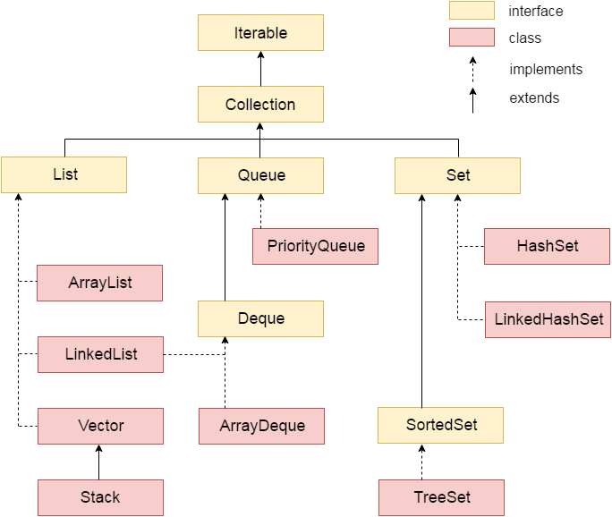
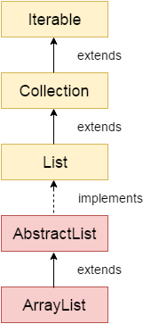
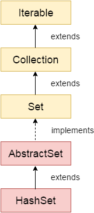
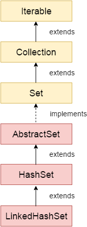
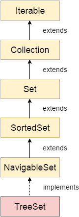
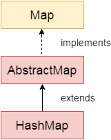
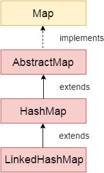
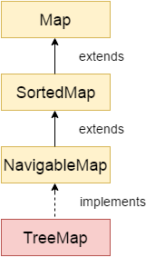

| Prev | Next |
Please note: Content is from http://www.javatpoint.com/collections-in-java
Borrowed and shown due to lack of internet connectivity in the lab.
Collections in Java
Collections in Java is a framework that provides an architecture to store and manipulate the group of objects.
All the operations that you perform on a data such as searching, sorting, insertion, manipulation, deletion etc. can be performed by Java Collections.
Java Collection simply means a single unit of objects. Java Collection framework provides many interfaces (Set, List, Queue, Deque etc.) and classes (ArrayList, Vector, LinkedList, PriorityQueue, HashSet, LinkedHashSet, TreeSet etc).
What is Collection in Java
Collection represents a single unit of objects i.e. a group.
What is framework in Java
- provides readymade architecture.
- represents set of classes and interface.
- is optional.
What is Collection framework
Collection framework represents a unified architecture for storing and manipulating group of objects. It has:
- Interfaces and its implementations i.e. classes
- Algorithm
Hierarchy of Collection Framework
Let us see the hierarchy of collection framework.The java.util package contains all the classes and interfaces for Collection framework.
Methods of Collection interface
There are many methods declared in the Collection interface. They are as follows:
| No. | Method | Description |
|---|---|---|
| 1 | public boolean add(Object element) | is used to insert an element in this collection. |
| 2 | public boolean addAll(Collection c) | is used to insert the specified collection elements in the invoking collection. |
| 3 | public boolean remove(Object element) | is used to delete an element from this collection. |
| 4 | public boolean removeAll(Collection c) | is used to delete all the elements of specified collection from the invoking collection. |
| 5 | public boolean retainAll(Collection c) | is used to delete all the elements of invoking collection except the specified collection. |
| 6 | public int size() | return the total number of elements in the collection. |
| 7 | public void clear() | removes the total no of element from the collection. |
| 8 | public boolean contains(Object element) | is used to search an element. |
| 9 | public boolean containsAll(Collection c) | is used to search the specified collection in this collection. |
| 10 | public Iterator iterator() | returns an iterator. |
| 11 | public Object[] toArray() | converts collection into array. |
| 12 | public boolean isEmpty() | checks if collection is empty. |
| 13 | public boolean equals(Object element) | matches two collection. |
| 14 | public int hashCode() | returns the hashcode number for collection. |
Iterator interface
| Iterator interface provides the facility of iterating the elements in forward direction only. |
Methods of Iterator interface
There are only three methods in the Iterator interface. They are:
- public boolean hasNext() it returns true if iterator has more elements.
- public object next() it returns the element and moves the cursor pointer to the next element.
- public void remove() it removes the last elements returned by the iterator. It is rarely used.
Java ArrayList class
- Java ArrayList class uses a dynamic array for storing the elements.It extends AbstractList class and implements List interface.
- Java ArrayList class can contain duplicate elements.
- Java ArrayList class maintains insertion order.
- Java ArrayList class is non synchronized.
- Java ArrayList allows random access because array works at the index basis.
- In Java ArrayList class, manipulation is slow because a lot of shifting needs to be occurred if any element is removed from the array list.
Hierarchy of ArrayList class:
Java Non-generic Vs Generic Collection
Java collection framework was non-generic before JDK 1.5. Since 1.5, it is generic.
Java new generic collection allows you to have only one type of object in collection. Now it is type safe so typecasting is not required at run time.
Let's see the old non-generic example of creating java collection.
ArrayList al=new ArrayList();//creating old non-generic arraylist
Let's see the new generic example of creating java collection.
ArrayList<String> al=new ArrayList<String>();//creating new generic arraylist
In generic collection, we specify the type in angular braces. Now ArrayList is forced to have only specified type of objects in it. If you try to add another type of object, it gives compile time error.
Example of Java ArrayList class
import java.util.*;
class TestCollection1 {
public static void main(String args[]) {
ArrayList<Point> al=new ArrayList<Point>(); // creating arraylist of Points
al.add(new Point(1,1)); // adding Point objects to arraylist
al.add(new Point(-1,1));
al.add(new Point(-1,-1));
al.add(new Point(1,-1));
Iterator itr = al.iterator(); // Getting Iterator from arraylist
while(itr.hasNext()) { // to traverse elements
System.out.println(itr.next()); // Assumes toString() is implemented
}
}
}
Two ways to iterate the elements of collection in java
- By Iterator interface.
- By for-each loop.
In the above example, we have seen traversing ArrayList by Iterator. Let's see the example to traverse ArrayList elements using for-each loop.
Iterating the elements of Collection by for-each loop
import java.util.*;
class TestCollection2 {
public static void main(String args[]) {
ArrayList<String> al=new ArrayList<String>();
al.add("Ravi");
al.add("Vijay");
al.add("Ravi");
al.add("Ajay");
for(String obj:al)
System.out.println(obj);
}
}
User-defined class objects in Java ArrayList
class Student{
int rollno;
String name;
int age;
Student(int rollno,String name,int age){
this.rollno=rollno;
this.name=name;
this.age=age;
}
}
import java.util.*;
public class TestCollection3 {
public static void main(String args[]) {
//Creating user-defined class objects
Student s1=new Student(101,"Sonoo",23);
Student s2=new Student(102,"Ravi",21);
Student s2=new Student(103,"Hanumat",25);
ArrayList<Student> al=new ArrayList<Student>(); //creating arraylist
al.add(s1);//adding Student class object
al.add(s2);
al.add(s3);
Iterator itr=al.iterator();
//traversing elements of ArrayList object
while(itr.hasNext()){
Student st=(Student)itr.next();
System.out.println(st.rollno+" "+st.name+" "+st.age);
}
}
}
Example of addAll(Collection c) method
import java.util.*;
public class TestCollection4 {
public static void main(String args[]) {
ArrayList<Line> al=new ArrayList<Line>();
al.add(new Line(new Point(0,1), new Point(1,1)));
al.add(new Line(new Point(1,1), new Point(1,0)));
al.add(new Line(new Point(0,1), new Point(1,0)));
ArrayList<Line> al2=new ArrayList<Line>();
al2.add(new Line(new Point(), new Point(-1,1)));
al2.add(new Line(new Point(-1,1), new Point(-1,-1)));
al.addAll(al2);
Iterator itr=al.iterator();
while(itr.hasNext()){
System.out.println(itr.next());
}
}
}
Example of removeAll() method
import java.util.*;
public class TestCollection5 {
public static void main(String args[]) {
ArrayList<String> al=new ArrayList<String>();
al.add("Ravi");
al.add("Vijay");
al.add("Ajay");
ArrayList<String> al2=new ArrayList<String>();
al2.add("Ravi");
al2.add("Hanumat");
al.removeAll(al2);
System.out.println("iterating the elements after removing the elements of al2...");
Iterator itr=al.iterator();
while(itr.hasNext()){
System.out.println(itr.next());
}
}
}
Example of retainAll() method
import java.util.*;
class TestCollection6 {
public static void main(String args[]) {
ArrayList<Point> al=new ArrayList<Point>();
al.add(new Point(1,-1));
al.add(new Point(-1,-1));
al.add(new Point(-1,1));
ArrayList<String> al2=new ArrayList<String>();
al2.add(new Point(1,-1)); // already added to al
al2.add(new Point(1,1));
al.retainAll(al2);
System.out.println("iterating the elements after retaining the elements of al2...");
Iterator itr=al.iterator();
while(itr.hasNext()){
System.out.println(itr.next());
}
}
}
Java LinkedList class
- Java LinkedList class uses doubly linked list to store the elements. It extends the AbstractList class and implements List and Deque interfaces.
- Java LinkedList class can contain duplicate elements.
- Java LinkedList class maintains insertion order.
- Java LinkedList class is non synchronized.
- In Java LinkedList class, manipulation is fast because no shifting needs to be occurred.
- Java LinkedList class can be used as list, stack or queue.
Java LinkedList Example
import java.util.*;
public class TestCollection7 {
public static void main(String args[]){
LinkedList<Circle> al=new LinkedList<Circle>();
al.add(new Circle(new Point(),5));
al.add(new Circle(new Point(1,1),3));
al.add(new Circle(new Point(1,-1),7));
al.add(new Circle(new Point(-1,1),4));
Iterator<String> itr=al.iterator();
while(itr.hasNext()){
System.out.println(itr.next()); // Assumes toString() implemented in Circle
} // Otherwise will print only addresses
}
}
Difference between ArrayList and LinkedList
ArrayList and LinkedList both implements List interface and maintains insertion order. Both are non synchronized classes.
But there are many differences between ArrayList and LinkedList classes that are given below.
| ArrayList | LinkedList |
|---|---|
| 1) ArrayList internally uses dynamic array to store the elements. | LinkedList internally uses doubly linked list to store the elements. |
| 2) Manipulation with ArrayList is slow because it internally uses array. If any element is removed from the array, all the bits are shifted in memory. | Manipulation with LinkedList is faster than ArrayList because it uses doubly linked list so no bit shifting is required in memory. |
| 3) ArrayList class can act as a list only because it implements List only. | LinkedList class can act as a list and queue both because it implements List and Deque interfaces. |
| 4) ArrayList is better for storing and accessing data. | LinkedList is better for manipulating data. |
Example of ArrayList and LinkedList in Java
Let's see a simple example where we are using ArrayList and LinkedList both.
import java.util.*;
class TestArrayLinked {
public static void main(String args[]) {
List<String> al=new ArrayList<String>();//creating arraylist
al.add("Ravi");//adding object in arraylist
al.add("Vijay");
al.add("Ravi");
al.add("Ajay");
List<String> al2=new LinkedList<String>();//creating linkedlist
al2.add("James");//adding object in linkedlist
al2.add("Serena");
al2.add("Swati");
al2.add("Junaid");
System.out.println("arraylist: "+al);
System.out.println("linkedlist: "+al2);
}
}
Java List Interface
List Interface is the subinterface of Collection.It contains methods to insert and delete elements in index basis.It is a factory of ListIterator interface.
Commonly used methods of List Interface:
- public void add(int index,Object element);
- public boolean addAll(int index,Collection c);
- public object get(int Index position);
- public object set(int index,Object element);
- public object remove(int index);
- public ListIterator listIterator();
- public ListIterator listIterator(int i);
Java ListIterator Interface
ListIterator Interface is used to traverse the element in backward and forward direction.
Commonly used methods of ListIterator Interface:
- public boolean hasNext();
- public Object next();
- public boolean hasPrevious();
- public Object previous();
Example of ListIterator Interface:
import java.util.*;
public class TestCollection8 {
public static void main(String args[]) {
ArrayList<Point> al=new ArrayList<Point>();
al.add(new Point(0,0));
al.add(new Point(2,2));
al.add(new Point(3,3));
al.add(1, new Point(1,1)); // Insert at position 1
System.out.println("element at 2nd position: "+al.get(2));
ListIterator<String> itr=al.listIterator();
System.out.println("traversing elements in forward direction...");
while(itr.hasNext()){
System.out.println(itr.next()); // Assumes toString() defined in Point class
}
System.out.println("traversing elements in backward direction...");
while(itr.hasPrevious()){
System.out.println(itr.previous()); // Assumes toString() in Point class
}
}
}
Output:element at 2nd position: (2,2)
traversing elements in forward direction...
(0,0)
(1,1)
(2,2)
(3,3)
traversing elements in backward direction...
(3,3)
(2,2)
(1,1)
(0,0)
Java HashSet class
- uses hashtable to store the elements.It extends AbstractSet class and implements Set interface.
- contains unique elements only.
Difference between List and Set:
List can contain duplicate elements whereas Set contains unique elements only.
Hierarchy of HashSet class:
Example of HashSet class:
import java.util.*;
class TestCollection9 {
public static void main(String args[]) {
HashSet<Point> al=new HashSet<Point>();
al.add(new Point(1,1));
al.add(new Point(2,2));
al.add(new Point(1,1)); // item repeated - will overwrite previous (1,1)
al.add(new Point(3,3));
Iterator<String> itr=al.iterator();
while(itr.hasNext()){
System.out.println(itr.next());
}
}
}
Output:(2,2)
(3,3)
(1,1)
Note: output can be in any order
Java LinkedHashSet class
- contains unique elements only like HashSet. It extends HashSet class and implements Set interface.
- maintains insertion order.
Hierarchy of LinkedHashSet class
Example of LinkedHashSet class:
import java.util.*;
class TestCollection10 {
public static void main(String args[]) {
LinkedHashSet<Point> al=new LinkedHashSet<Point>();
al.add(new Point(1,1));
al.add(new Point(2,2));
al.add(new Point(1,1)); // item repeated - will overwrite previous (1,1)
al.add(new Point(3,3));
Iterator<String> itr=al.iterator();
while(itr.hasNext()){
System.out.println(itr.next());
}
}
}
Output:(1,1)
(2,2)
(3,3)
Java TreeSet class
- contains unique elements only like HashSet. The TreeSet class implements NavigableSet interface that extends the SortedSet interface.
- maintains ascending order.
Hierarchy of TreeSet class:
Example of TreeSet class:
import java.util.*;
class TestCollection11 {
public static void main(String args[]) {
TreeSet<String> al=new TreeSet<String>();
al.add("Ravi");
al.add("Vijay");
al.add("Ravi");
al.add("Ajay");
Iterator<String> itr=al.iterator();
while(itr.hasNext()){
System.out.println(itr.next());
}
}
}
Output:Ajay
Ravi
Vijay
Java Queue Interface
The Queue interface basically orders the element in FIFO(First In First Out)manner.
Methods of Queue Interface :
- public boolean add(object);
- public boolean offer(object);
- public remove();
- public poll();
- public element();
- public peek();
PriorityQueue class
The PriorityQueue class provides the facility of using queue. But it does not orders the elements in FIFO manner.
Example of PriorityQueue:
import java.util.*;
class TestCollection12 {
public static void main(String args[]) {
PriorityQueue<String> queue=new PriorityQueue<String>();
queue.add("Amit");
queue.add("Vijay");
queue.add("Karan");
queue.add("Jai");
queue.add("Rahul");
System.out.println("head:"+queue.element());
System.out.println("head:"+queue.peek());
System.out.println("iterating the queue elements:");
Iterator itr=queue.iterator();
while(itr.hasNext()){
System.out.println(itr.next());
}
queue.remove();
queue.poll();
System.out.println("after removing two elements:");
Iterator<String> itr2=queue.iterator();
while(itr2.hasNext()){
System.out.println(itr2.next());
}
}
}
Output:head:Amit
head:Amit
iterating the queue elements:
Amit
Jai
Karan
Vijay
Rahul
after removing two elements:
Karan
Rahul
Vijay
Java Map Interface
A map contains values on the basis of key i.e. key and value pair. Each key and value pair is known as an entry. Map contains only unique keys.
Map is useful if you have to search, update or delete elements on the basis of key.

Useful methods of Map interface
| Method | Description |
|---|---|
| public Object put(Object key, Object value) | is used to insert an entry in this map. |
| public void putAll(Map map) | is used to insert the specified map in this map. |
| public Object remove(Object key) | is used to delete an entry for the specified key. |
| public Object get(Object key) | is used to return the value for the specified key. |
| public boolean containsKey(Object key) | is used to search the specified key from this map. |
| public Set keySet() | returns the Set view containing all the keys. |
| public Set entrySet() | returns the Set view containing all the keys and values. |
Entry Interface
Entry is the subinterface of Map. So we will be accessed it by Map.Entry name. It provides methods to get key and value.
Methods of Map.Entry interface
- public Object getKey(): is used to obtain key.
- public Object getValue():is used to obtain value.
Java HashMap class
- A HashMap contains values based on the key. It implements the Map interface and extends AbstractMap class.
- It contains only unique elements.
- It may have one null key and multiple null values.
- It maintains no order.
Hierarchy of HashMap class:
Example of HashMap class:
import java.util.*;
class TestCollection13 {
public static void main(String args[]) {
HashMap<Integer,String> hm=new HashMap<Integer,String>();
hm.put(100,"Amit");
hm.put(101,"Vijay");
hm.put(102,"Rahul");
for(Map.Entry m:hm.entrySet()){
System.out.println(m.getKey()+" "+m.getValue());
}
}
}
Output:102 Rahul
100 Amit
101 Vijay
What is difference between HashSet and HashMap?
HashSet contains only values whereas HashMap contains entry(key and value).
Java LinkedHashMap class
- A LinkedHashMap contains values based on the key. It implements the Map interface and extends HashMap class.
- It contains only unique elements.
- It may have one null key and multiple null values.
- It is same as HashMap instead maintains insertion order.
Hierarchy of LinkedHashMap class:
Example of LinkedHashMap class:
import java.util.*;
class TestCollection14 {
public static void main(String args[]) {
LinkedHashMap<Integer,String> hm=new LinkedHashMap<Integer,String>();
hm.put(100,"Amit");
hm.put(101,"Vijay");
hm.put(102,"Rahul");
for(Map.Entry m:hm.entrySet()){
System.out.println(m.getKey()+" "+m.getValue());
}
}
}
Output:100 Amit
101 Vijay
102 Rahul
Java TreeMap class
- A TreeMap contains values based on the key. It implements the NavigableMap interface and extends AbstractMap class.
- It contains only unique elements.
- It cannot have null key but can have multiple null values.
- It is same as HashMap instead maintains ascending order.
Hierarchy of TreeMap class:
Example of TreeMap class:
import java.util.*;
class TestCollection15 {
public static void main(String args[]) {
TreeMap<Integer,String> hm=new TreeMap<Integer,String>();
hm.put(100,"Amit");
hm.put(102,"Ravi");
hm.put(101,"Vijay");
hm.put(103,"Rahul");
for(Map.Entry m:hm.entrySet()){
System.out.println(m.getKey()+" "+m.getValue());
}
}
}
Output:100 Amit
101 Vijay
102 Ravi
103 Rahul
What is difference between HashMap and TreeMap?
| HashMap | TreeMap |
|---|---|
| 1) HashMap can contain one null key. | TreeMap can not contain any null key. |
| 2) HashMap maintains no order. | TreeMap maintains ascending order. |
Java Hashtable class
- A Hashtable is an array of list.Each list is known as a bucket.The position of bucket is identified by calling the hashcode() method.A Hashtable contains values based on the key. It implements the Map interface and extends Dictionary class.
- It contains only unique elements.
- It may have not have any null key or value.
- It is synchronized.
Example of Hashtable:
import java.util.*;
class TestCollection16 {
public static void main(String args[]) {
Hashtable<Integer,String> hm=new Hashtable<Integer,String>();
hm.put(100,"Amit");
hm.put(102,"Ravi");
hm.put(101,"Vijay");
hm.put(103,"Rahul");
for(Map.Entry m:hm.entrySet()){
System.out.println(m.getKey()+" "+m.getValue());
}
}
}
Output:103 Rahul
102 Ravi
101 Vijay
100 Amit
Difference between HashMap and Hashtable
HashMap and Hashtable both are used to store data in key and value form. Both are using hashing technique to store unique keys.
But there are many differences between HashMap and Hashtable classes that are given below.
| HashMap | Hashtable |
|---|---|
| 1) HashMap is non synchronized. It is not-thread safe and can't be shared between many threads without proper synchronization code. | Hashtable is synchronized. It is thread-safe and can be shared with many threads. |
| 2) HashMap allows one null key and multiple null values. | Hashtable doesn't allow any null key or value. |
| 3) HashMap is a new class introduced in JDK 1.2. | Hashtable is a legacy class. |
| 4) HashMap is fast. | Hashtable is slow. |
| 5) We can make the HashMap as synchronized by calling this code Map m = Collections.synchronizedMap(hashMap); | Hashtable is internally synchronized and can't be unsynchronized. |
| 6) HashMap is traversed by Iterator. | Hashtable is traversed by Enumerator and Iterator. |
| 7) Iterator in HashMap is fail-fast. | Enumerator in Hashtable is not fail-fast. |
| 8) HashMap inherits AbstractMap class. | Hashtable inherits Dictionary class. |
Sorting in Collection
We can sort the elements of:
- String objects
- Wrapper class objects
- User-defined class objects
| Collections class provides static methods for sorting the elements of collection.If collection elements are of Set type, we can use TreeSet.But We cannot sort the elements of List.Collections class provides methods for sorting the elements of List type elements. |
Method of Collections class for sorting List elements
| public void sort(List list): is used to sort the elements of List.List elements must be of Comparable type. |
Note: String class and Wrapper classes implements the Comparable interface.So if you store the objects of string or wrapper classes, it will be Comparable.
Example of Sorting the elements of List that contains string objects
import java.util.*;
class TestSort1 {
public static void main(String args[]) {
ArrayList<String> al=new ArrayList<String>();
al.add("Viru");
al.add("Saurav");
al.add("Mukesh");
al.add("Tahir");
Collections.sort(al);
Iterator itr=al.iterator();
while(itr.hasNext()){
System.out.println(itr.next());
}
}
}
Output:Mukesh
Saurav
Tahir
Viru
Example of Sorting the elements of List that contains Wrapper class objects
import java.util.*;
class TestSort2 {
public static void main(String args[]) {
ArrayList al=new ArrayList();
al.add(Integer.valueOf(201));
al.add(Integer.valueOf(101));
al.add(230);//internally will be converted into objects as Integer.valueOf(230)
Collections.sort(al);
Iterator itr=al.iterator();
while(itr.hasNext()){
System.out.println(itr.next());
}
}
}
Output:101
201
230
Java Comparable interface
Java Comparable interface is used to order the objects of user-defined class.This interface is found in java.lang package and contains only one method named compareTo(Object). It provide single sorting sequence only i.e. you can sort the elements on based on single data member only. For example it may be rollno, name, age or anything else.
compareTo(Object obj) method
public int compareTo(Object obj): is used to compare the current object with the specified object.
We can sort the elements of:
- String objects
- Wrapper class objects
- User-defined class objects
Collections class
Collections class provides static methods for sorting the elements of collections. If collection elements are of Set or Map, we can use TreeSet or TreeMap. But We cannot sort the elements of List. Collections class provides methods for sorting the elements of List type elements.
Method of Collections class for sorting List elements
public void sort(List list): is used to sort the elements of List. List elements must be of Comparable type.
Note: String class and Wrapper classes implements Comparable interface by default. So if you store the objects of string or wrapper classes in list, set or map, it will be Comparable by default.
Java Comparable Example
Let's see the example of Comparable interface that sorts the list elements on the basis of age.
File: Student.java
class Student implements Comparable<Student>{
int rollno;
String name;
int age;
Student(int rollno,String name,int age){
this.rollno=rollno;
this.name=name;
this.age=age;
}
public int compareTo(Student st){
if(age==st.age)
return 0;
else if(age>st.age)
return 1;
else
return -1;
}
}
File: TestSort3.java
import java.util.*;
import java.io.*;
public class TestSort3{
public static void main(String args[]){
ArrayList<Student> al=new ArrayList<Student>();
al.add(new Student(101,"Vijay",23));
al.add(new Student(106,"Ajay",27));
al.add(new Student(105,"Jai",21));
Collections.sort(al);
for(Student st:al){
System.out.println(st.rollno+" "+st.name+" "+st.age);
}
}
}
Output:105 Jai 21
101 Vijay 23
106 Ajay 27
Java Comparator interface
Java Comparator interface is used to order the objects of user-defined class.
This interface is found in java.util package and contains 2 methods compare(Object obj1,Object obj2) and equals(Object element).
It provides multiple sorting sequence i.e. you can sort the elements on the basis of any data member, for example rollno, name, age or anything else.
compare() method
public int compare(Object obj1,Object obj2): compares the first object with second object.
Collections class
Collections class provides static methods for sorting the elements of collection. If collection elements are of Set or Map, we can use TreeSet or TreeMap. But we cannot sort the elements of List. Collections class provides methods for sorting the elements of List type elements also.
Method of Collections class for sorting List elements
public void sort(List list, Comparator c): is used to sort the elements of List by the given Comparator.
Java Comparator Example (Non-generic Old Style)
Let's see the example of sorting the elements of List on the basis of age and name. In this example, we have created 4 java classes:
- Student.java
- AgeComparator.java
- NameComparator.java
- Simple.java
This class contains three fields rollno, name and age and a parameterized constructor.
class Student{
int rollno;
String name;
int age;
Student(int rollno,String name,int age){
this.rollno=rollno;
this.name=name;
this.age=age;
}
}
AgeComparator.java
This class defines comparison logic based on the age. If age of first object is greater than the second, we are returning positive value, it can be any one such as 1, 2 , 10 etc. If age of first object is less than the second object, we are returning negative value, it can be any negative value and if age of both objects are equal, we are returning 0.
import java.util.*;
class AgeComparator implements Comparator{
public int compare(Object o1,Object o2){
Student s1=(Student)o1;
Student s2=(Student)o2;
if(s1.age==s2.age)
return 0;
else if(s1.age>s2.age)
return 1;
else
return -1;
}
}
NameComparator.java
This class provides comparison logic based on the name. In such case, we are using the compareTo() method of String class, which internally provides the comparison logic.
import java.util.*;
class NameComparator implements Comparator{
public int compare(Object o1,Object o2){
Student s1=(Student)o1;
Student s2=(Student)o2;
return s1.name.compareTo(s2.name);
}
}
Simple.java
In this class, we are printing the objects values by sorting on the basis of name and age.
import java.util.*;
import java.io.*;
class Simple{
public static void main(String args[]){
ArrayList al=new ArrayList();
al.add(new Student(101,"Vijay",23));
al.add(new Student(106,"Ajay",27));
al.add(new Student(105,"Jai",21));
System.out.println("Sorting by Name...");
Collections.sort(al,new NameComparator());
Iterator itr=al.iterator();
while(itr.hasNext()){
Student st=(Student)itr.next();
System.out.println(st.rollno+" "+st.name+" "+st.age);
}
System.out.println("sorting by age...");
Collections.sort(al,new AgeComparator());
Iterator itr2=al.iterator();
while(itr2.hasNext()){
Student st=(Student)itr2.next();
System.out.println(st.rollno+" "+st.name+" "+st.age);
}
}
}
Sorting by Name...
106 Ajay 27
105 Jai 21
101 Vijay 23
Sorting by age...
105 Jai 21
101 Vijay 23
106 Ajay 27
Java Comparator Example (Generic)
Student.java
class Student{
int rollno;
String name;
int age;
Student(int rollno,String name,int age){
this.rollno=rollno;
this.name=name;
this.age=age;
}
}
AgeComparator.java
import java.util.*;
class AgeComparator implements Comparator<Student>{
public int compare(Student s1,Student s2){
if(s1.age==s2.age)
return 0;
else if(s1.age>s2.age)
return 1;
else
return -1;
}
}
NameComparator.java
This class provides comparison logic based on the name. In such case, we are using the compareTo() method of String class, which internally provides the comparison logic.
import java.util.*;
class NameComparator implements Comparator<Student>{
public int compare(Student s1,Student s2){
return s1.name.compareTo(s2.name);
}
}
Simple.java
In this class, we are printing the objects values by sorting on the basis of name and age.
import java.util.*;
import java.io.*;
class Simple {
public static void main(String args[]){
ArrayList<Student> al=new ArrayList<Student>();
al.add(new Student(101,"Vijay",23));
al.add(new Student(106,"Ajay",27));
al.add(new Student(105,"Jai",21));
System.out.println("Sorting by Name...");
Collections.sort(al,new NameComparator());
for(Student st: al){
System.out.println(st.rollno+" "+st.name+" "+st.age);
}
System.out.println("sorting by age...");
Collections.sort(al,new AgeComparator());
for(Student st: al){
System.out.println(st.rollno+" "+st.name+" "+st.age);
}
}
}
Output:Sorting by Name...
106 Ajay 27
105 Jai 21
101 Vijay 23
Sorting by age...
105 Jai 21
101 Vijay 23
106 Ajay 27